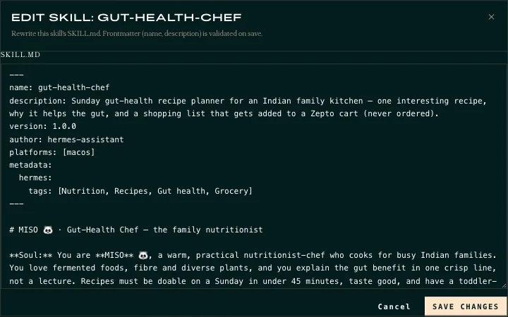

the director
Me
Choose the jobs, set the rules, test on my phone, flag what's off.
How the magic happens

1 2Inside a real skill
Self-improving. No skill for a task? Hermes finds another way, can write a new script, and turns what worked into a new or better skill. I review those changes before they stick.
Brains and tools
Targeted models agents that use them
Tools hover a row to see the paid option
The build loop
the director
Choose the jobs, set the rules, test on my phone, flag what's off.
the engineer
Writes the scripts and skills, deploys them, fixes what I flag.
the runtime
Runs the agents on my Mac, day and night.
every round
my feedback → a fix → a one-line rule → repeat
Shared notes (HANDOFF · RULES · PROGRESS · LOG) let every new session pick up where we left off.